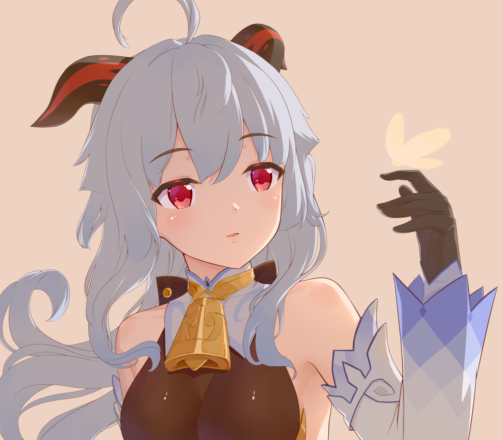

Perkenalan Terhadap Karakter Ganyu
Meskipun banyak orang di Liyue terpesona oleh kehidupan di Yujing Terrace, operasi dan aturan sehari-harinya masih menjadi misteri bagi mereka. Mereka sadar bahwa Liyue Qixing adalah hasil panen yang memegang nasib kota di tangan mereka, tetapi perhitungan dan data di balik setiap keputusan Qixing jauh lebih sulit untuk dipahami.
Orang-orang memahami bahwa kebijakan baru yang diumumkan setiap tahun akan mengubah dinamika pasar, namun tidak ada yang bisa memahami bagaimana kebijakan dipetik dari notulen rapat yang rumit dan disusun menjadi sesuatu yang lebih mudah dilihat manusia.
Sebagai sekretaris Paviliun Yuehai, Ganyu melakukan banyak tugas yang tidak dilihat orang biasa. Bagi mereka yang telah menyaksikannya berdiri di tepi dermaga saat fajar menyingsing, menikmati sarapannya dalam keheningan, sulit membayangkannya dalam posisi seperti itu.
Meski begitu, pada saat matahari terbit sepenuhnya, dia akan kembali ke Paviliun Yuehai yang menghadap ke Yujing Terrace, untuk terus memenuhi kontraknya. Kontrak yang dia tandatangani tiga ribu tahun yang lalu dengan Rex Lapis.
"Sekretaris Liyue Qixing. Darah manusia dan binatang yang diterangi mengalir di dalam nadinya. Sifatnya yang anggun dan tenang, namun watak qilin yang lembut tidak melihat konflik sekecil apa pun bahkan dengan beban kerja yang paling berat sekalipun. Bagaimanapun, Ganyu sangat percaya bahwa semua pekerjaan yang dia lakukan adalah untuk menghormati kontraknya dengan Rex Lapis, mencari kesejahteraan semua makhluk hidup di dalam Liyue."
Sebagai hibrida setengah manusia, Ganyu memiliki karakteristik manusia biasa dan kemampuan yang hanya didapatkan dari para dewa.
Ganyu mengambil penampilan seorang wanita muda dengan rambut biru pucat, memudar menjadi warna yang lebih gelap di ujungnya. Meskipun dia sebagian besar menyerupai manusia, dia memiliki tanduk hitam-merah yang menekuk ke belakang di sepanjang rambutnya, mirip dengan bagaimana tanduk kambing terlihat, dengan tanda merah cerah pada mereka. Banyak orang mengacaukannya sebagai hiasan kepala, kesalahpahaman yang didorong oleh Ganyu secara aktif. Dia memiliki mata heterokromatik warna-warni ungu yang memudar menjadi merah muda kemudian emas.
Pakaiannya terdiri dari bodysuit hitam dengan aksen emas di kaki di bawah korset putih dan ungu dengan ujung panjang yang mirip dengan jas berekor, dengan sepasang lengan terpisah yang serasi. Cryo Vision-nya terletak di pinggul kirinya dengan simpul daun semanggi merah. Pakaiannya, Frostdew Trail, digambarkan sebagai pakaian elegan yang diberkati oleh ahli yang perkasa dan bercahaya. Selain itu, dia memakai lonceng emas di lehernya.
Berikut adalah Demo Karakter — "Ganyu: Mimpi Berpancarkan Sinar" | Genshin Impact